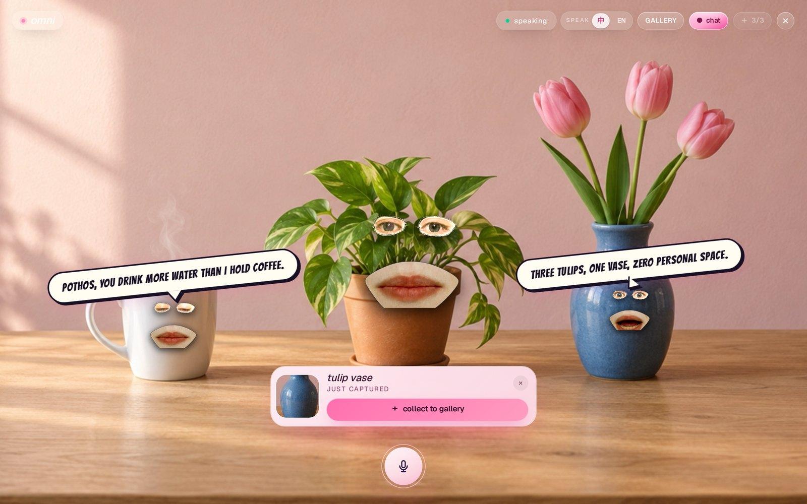
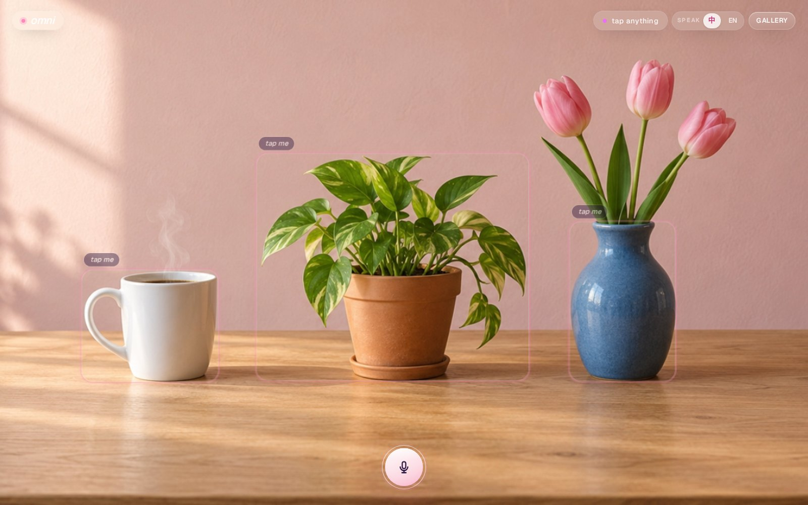
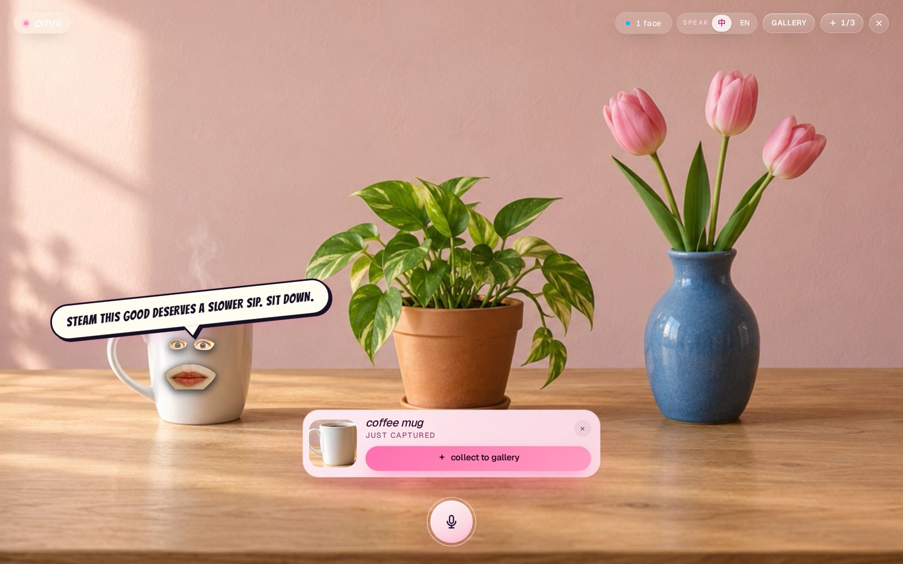
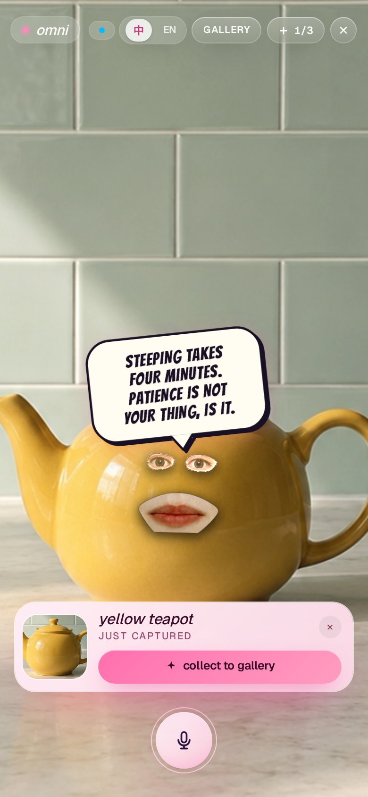
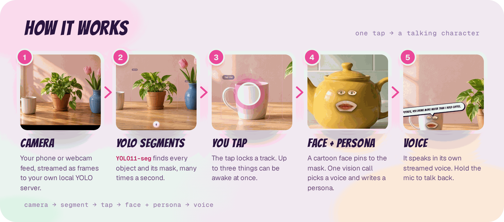

Give everything a soul.
Point your camera at anything and tap it. It wakes up with a face, a personality and a voice, and it talks back.
Your room, but chatty
These are real screens from the app. Tap a thing, it gets a face and a voice. Tap three and they start talking to each other.

Live segmentation
Frames stream to a small local server running YOLO11-seg. Every object comes back with its mask, many times a second.
Faces that stick
The cartoon face pins to the mask's centre and glides at 60 fps between detections, even when the thing moves.
A persona per object
One vision call names it, picks its voice and writes a persona card. Every reply after that stays in character.
Talk back
Hold the mic and say something. It answers in its own streamed voice, and the mouth moves with the audio.



How it works
One tap takes a thing from pixels to a talking character.

- CameraFrames go to
/ws/yolo, proxied by Next.js to the Python server. - SegmentYOLO11-seg returns boxes, masks and centroids.
- TapThe smallest object under your finger wins. Up to three at once.
- Face + personaOne vision call returns a name, voice, persona and first line.
- VoiceCartesia TTS streams into Web Audio, which drives the mouth.
Quick start
Node 20+, pnpm and Python 3.12. Run the vision server, then the app.
# 1. install and add your keys $ git clone https://github.com/harrythentrepreneur/omni $ cd omni && pnpm install $ cp .env.example .env.local # 2. the YOLO server (port 8000) $ python3 -m venv server/.venv $ server/.venv/bin/pip install ultralytics opencv-python \ dlib imutils numpy openai fastapi "uvicorn[standard]" \ python-multipart websockets python-dotenv $ pnpm server # 3. the app, then open localhost:3000 $ npx next dev
ZHIPU_API_KEY | needed | First-tap vision and face placement |
OPENAI_API_KEY | needed | Vision fallback and speech-to-text |
CARTESIA_API_KEY | recommended | The voices (captions only without it) |
CEREBRAS_API_KEY | recommended | Fast in-character replies |
RUNWARE_API_KEY | optional | Comic portraits in the gallery |
Phones need HTTPS for the camera: pnpm dev serves it with a local cert in certificates/. Full notes are in the README.